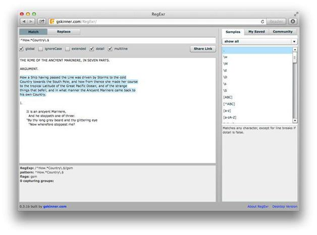

第3章 边界
本章的重点是断言。断言标记边界，但是并不耗用字符。也就是说，字符并不会返回到结果中。断言也被称做零宽度断言（zero-width assertion）。零宽度断言不匹配字符，而是匹配字符串中的位置。其中的一些，比如^和$，也叫做锚位符（anchor）。
本章讨论的边界有以下几种：
本章继续使用RegExr，但这回我们变点儿花样，使用Safari浏览器（当然，你可以使用任何浏览器），如图3-1所示。目标文本还是rime.txt的前12行。在Safari浏览器中打开http://gskinner.com/regexr，然后从代码库中将rime.txt的前12行复制到下方的文本框中。

图3-1 Safari中的RegExr